Florette
Spring 2026
Brand Identity, Packaging, Web Design

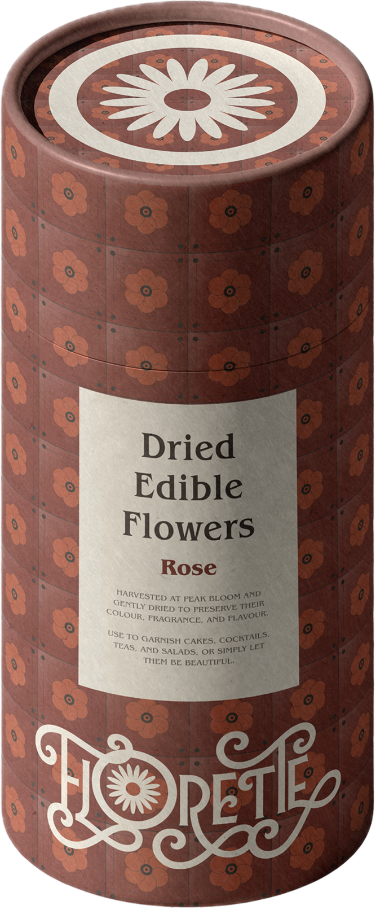
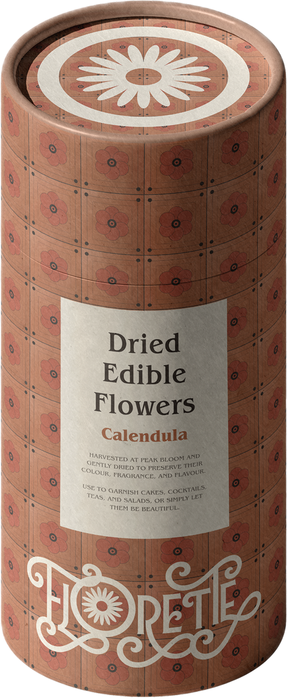
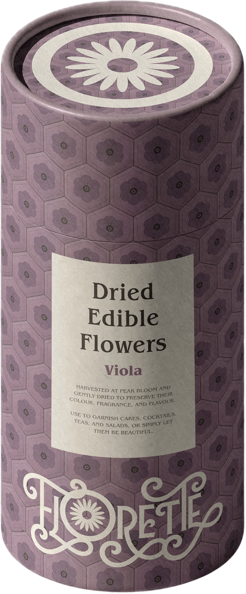
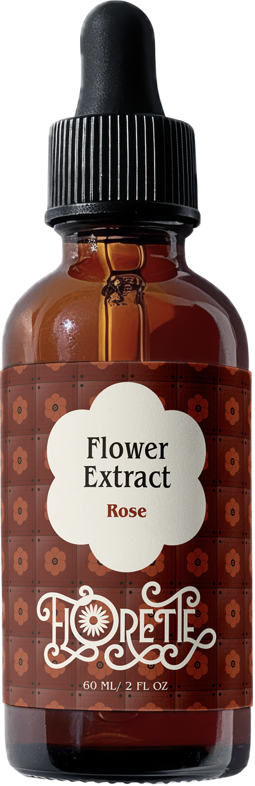
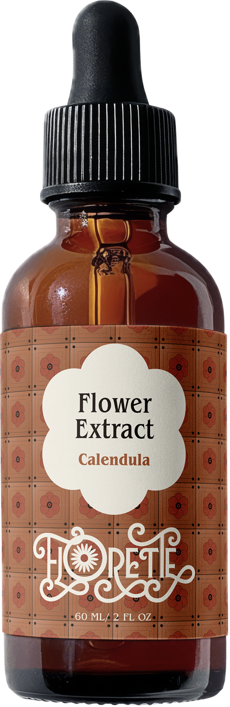
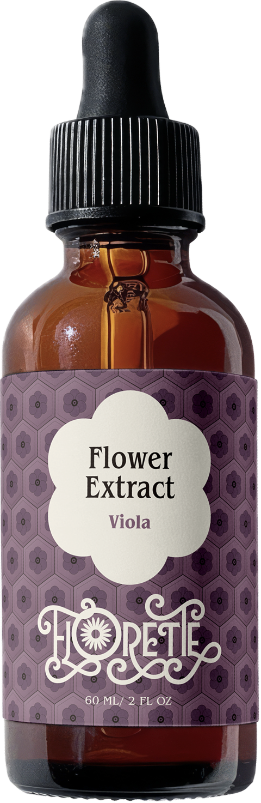
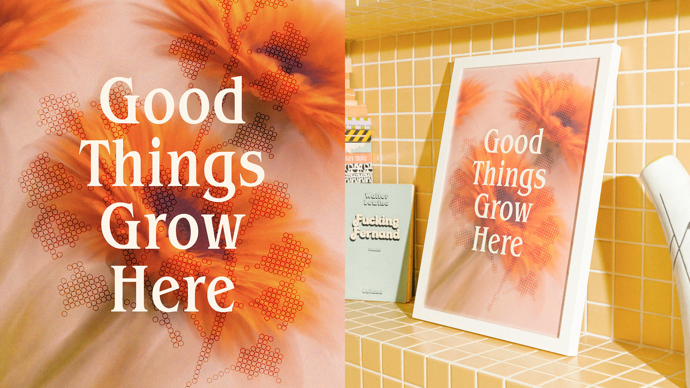
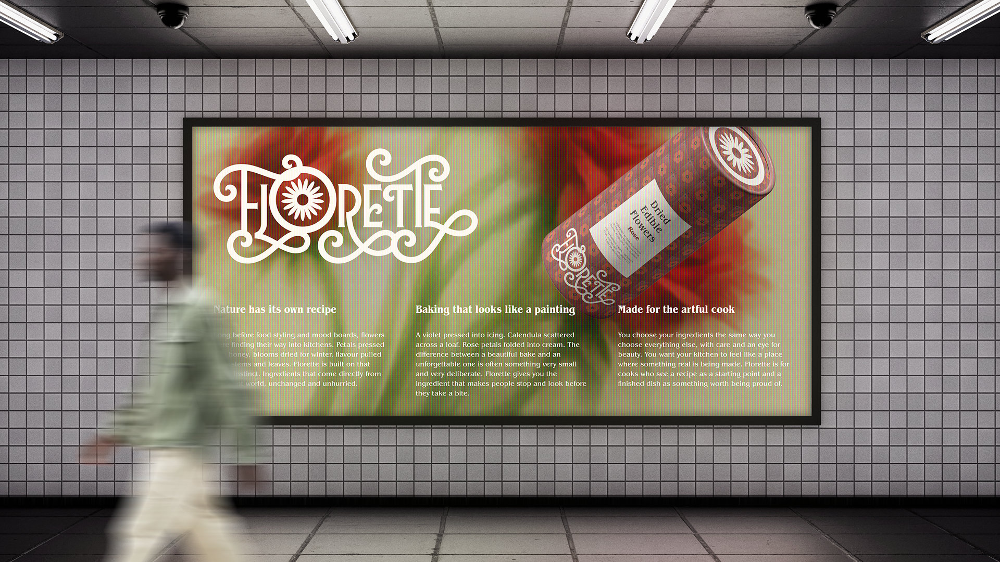
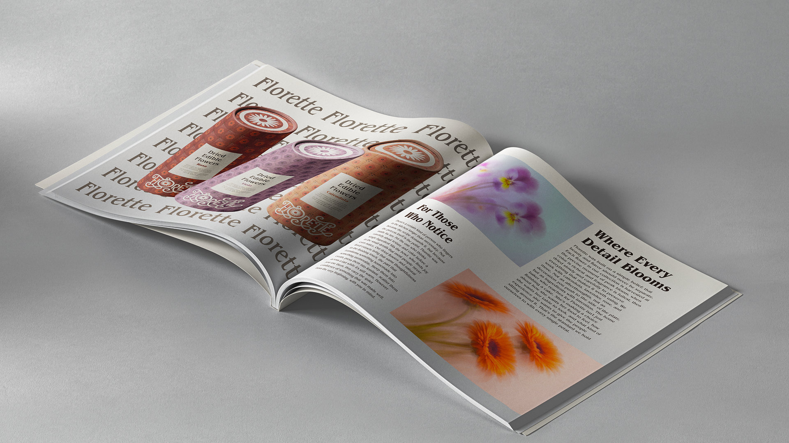

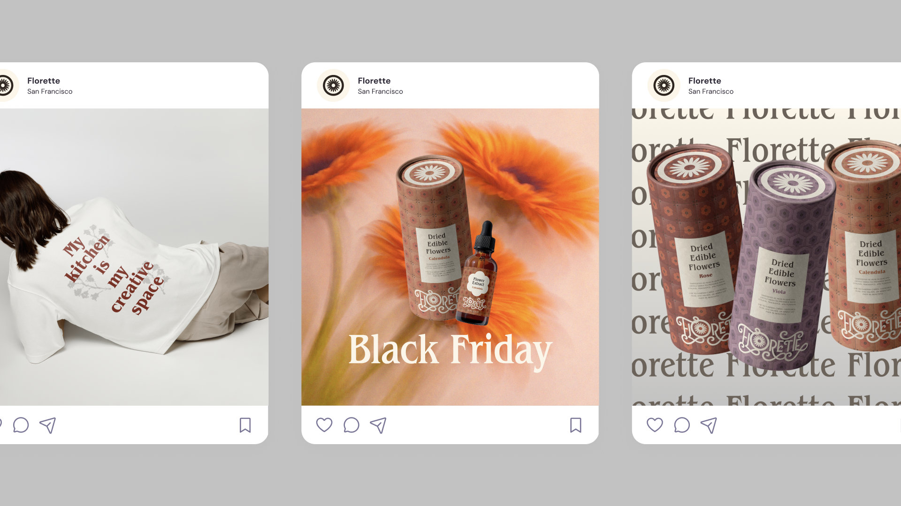
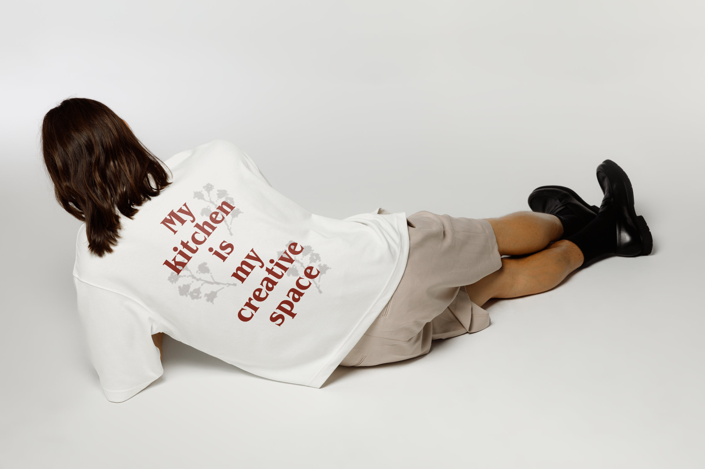
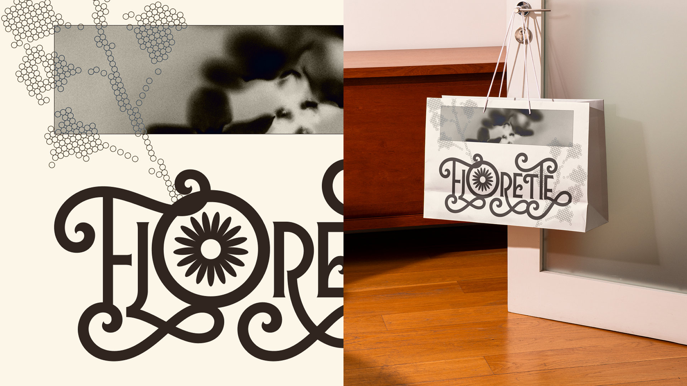
Concept
Florette is a brand for dried edible flowers and natural floral extracts, made for the young, aesthetically driven home baker and cook who treats the kitchen as a creative space. The audience, "The Artful Baker," discovers brands through Instagram and Pinterest, shops small, and is drawn to cottagecore, botanical aesthetics, and slow living. Florette is positioned as the only brand offering both dried flowers and floral extracts: premium, 100% natural ingredients that bring the beauty of nature to every bake and meal. The tone of voice sits at the intersection of three attributes: dreamy, natural, and joyful.
Brand Identity
The identity is built around a "Wild Type" idea: nature already has its own design system, so organic forms like petals, spirals, and curling vines are pulled directly from the plant world into the letterforms themselves. The wordmark grows its own flourishes (loops, scrolls, and a daisy that takes the place of the O), and a separate daisy mark sits inside a circular border, like a flower laid on a plate, for moments where the full wordmark won't fit.
Typography is set in Benguiat Pro ITC, an editorial serif that gives the brand warmth and craft across Medium Condensed, Bold Condensed, and Book weights. The palette is muted and earthy, anchored by Parchment and Espresso, with Rose, Calendula, and Viola accents that map directly onto the product line.
Applications
Two product lines extend across three flowers each: tile-patterned kraft tubes for the dried edible flowers, and amber dropper bottles for the floral extracts. Rose, Calendula, and Viola each get their own pattern and accent color, so the line reads as a family without losing each variant's identity.
The system stretches into print, out-of-home, social, merch, and a mobile app, with a moody, photographic website where the wordmark anchors the homepage and the daisy symbol carries the navigation.